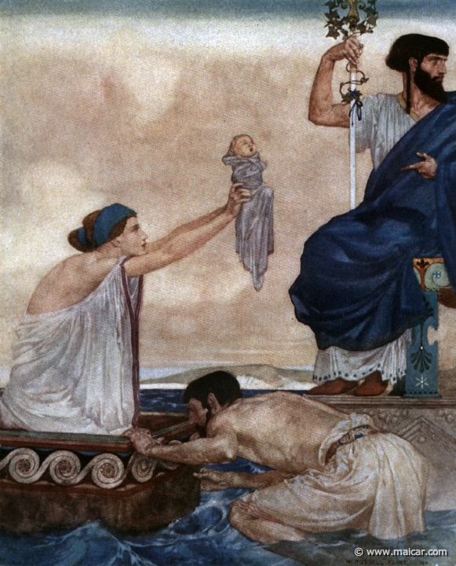
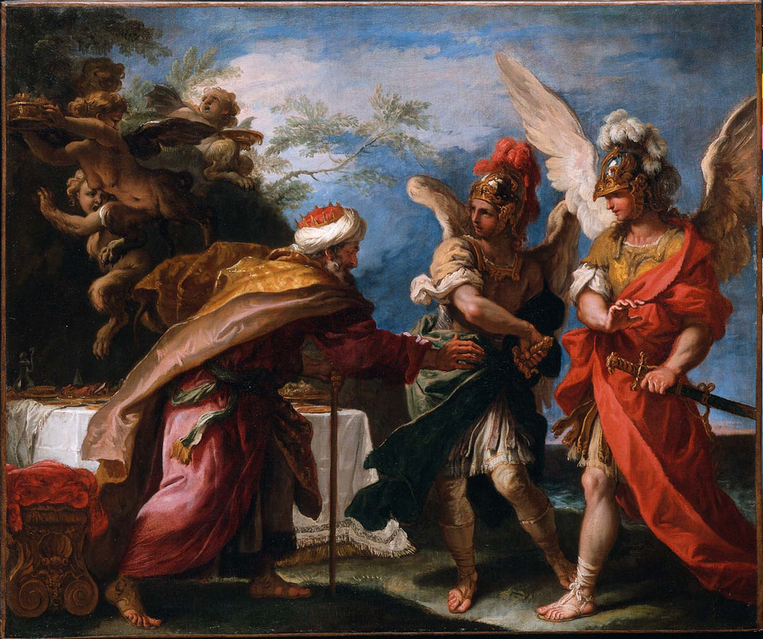
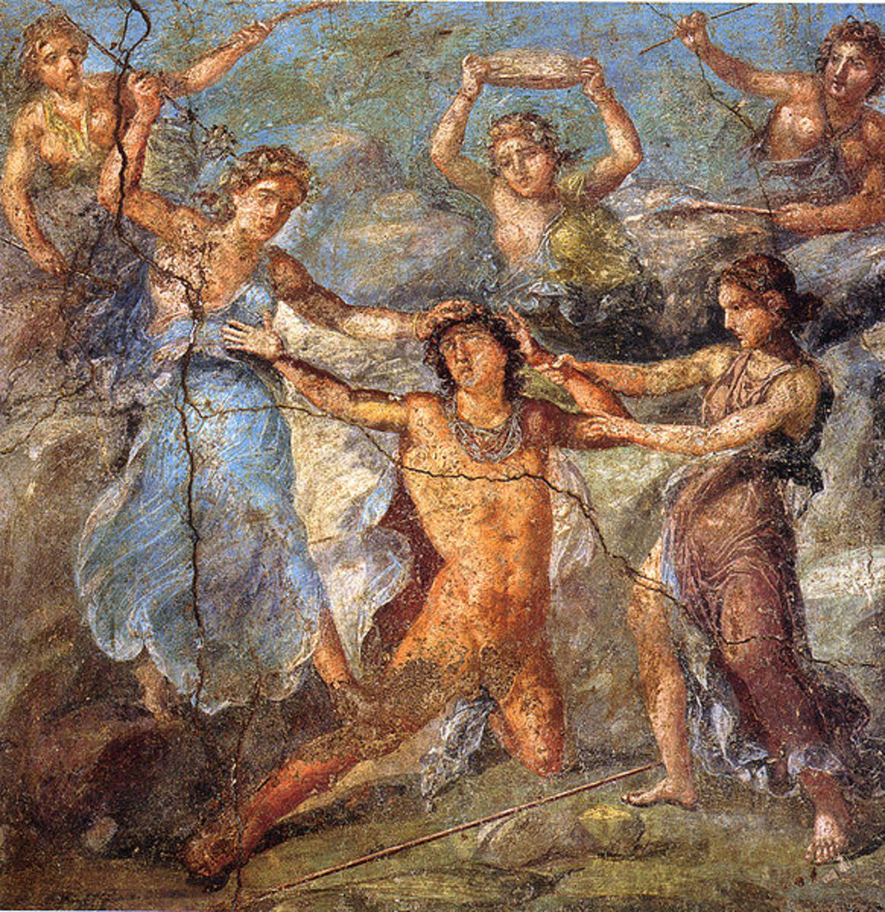

After Zeus had made his father Cronus throw up his brothers and sisters, a rebellion raged against Cronus and
the Titans against Zeus and the Olympians. The war lasted for 10 years until one day Zeus asked his
grandmother, Gaia (earth) for help. She told him he should release both the Cyclopes and the
Hundred-Handed-Ones from the Underworld so they could fight by his side. Zeus listened to her advice and he
and the Olympians ended up winning the war against Cronus and the Titans with their newfound allies.
The importance of this myth is that it led to Hades, Zeus, and Poseidon each drawing a lot to see what part
of the universe they would rule over. Hades was the ruler of the Underworld, Zeus was the ruler of the sky,
and Poseidon was the ruler of the sea.
The Birth of Perseus

King Acrisius of Argo was told by an oracle that one day one of his grandchildren would kill him. He was so
scared of this event coming to pass, that he locked his daughter, Danae, away in a cell. His plan was to
leave her in there until she was too old to have children. However, this plan failed to work, as Zeus
visited her in the form of a shower of gold dust. He impregnated her while in this form, and nine months
later she gave birth to a son she named Perseus. The King was furious so he ended up throwing Danae and
Perseus into the sea. They survived and landed on the island of Seriphos. Once Perseus was grown, Danae told
him that his father was actually the famous Greek god, Zeus.
This is an important myth because it is the birth of Perseus, the man who would end up beating the Gorgon,
Medusa. By his beating Medusa, the winged horse Pegasus was born. This is also a myth that is responsible
for many series of events that have implications on many of the lives of humans and gods alike.
Zeus and Old Phineus

The god of prophecy, Apollo, met Old Phineus and gave him the gift of prophecy. Zeus was infuriated by this
decision because he didn’t want humans to know what he and the other gods were doing. So, he punished Old
Phineus by ensuring that every time the man would try and eat a meal, the Harpies, known as Zeus’ Hounds,
would come and steal or ruin his Old Phineas’ food by covering it in the stench. This is a myth that
involves the Argonauts, and their leader, Jason. When Jason and his men came across Old Phineus, they
decided they had to help him.
They did so using two of the Argonauts who could fly, Zetes and Calais. Gathering a bunch of food together,
Jason and his Argonauts created a feast for Old Phineus and protected it against the Harpies. By the request
of Iris, the goddess of the rainbow and sister to the Harpies, the Argonauts spared the Harpies’ lives. Iris
then kept the Harpies away from Old Phineus and he was able to enjoy eating again.
By saving Phineus from starvation, Jason was awarded advice about the potential dangers he and his crew may
face. With this advice, Jason and his Argonauts were able to retrieve the Golden Fleece.
Zeus and the Trojan War
The summary of the myth: The events leading up to the 10 year Trojan war began when Eris, the goddess of
discord, threw a golden apple that was marked with the saying, “for the fairest goddess of all.” Hera,
Aphrodite, and Athena each thought the apple was for them. They went to Zeus to ask who the apple should go
to. Zeus decided he didn’t want to pick who the apple was meant for, so he came up with an idea.
The Prince of Troy, Paris was said to be a great judge of beauty. Zeus told Hera, Aphrodite, and Athena that
they should go to him. They did. When they found Paris, they each tried to bribe him. The goddess who won
was Aphrodite who promised Paris the love of the most beautiful woman in the entire world. This most
beautiful woman was Helen, the wife of King Menelaus of Sparta.
It was said Paris and Helen ran off together. Their leaving ended up beginning the Trojan war for the return
of Helen to her husband in Sparta.
The Birth of Dionysus

One day Zeus decided to take the form of a human and seduce the daughter of Cadmus, Semele. Zeus’ wife Hera
found out about this seduction and was furious because Semele was pregnant with another one of Zeus’
offspring. Hera tricked Zeus into showing his true god form to Semele. His real form was too much for human
eyes, so it caused Semele to shrivel up into a corpse. Zeus, knowing she was pregnant, grabbed the fetus
that was in her womb and put it in his thigh. The god of wine, Dionysus was eventually born from Zeus’
thigh.
Without Zeus saving Dionysus, there would be no god of festival and wine. Dionysus was a very well-known god
who played a big part in the festivities of humans. He had many festivals and events done in his honor.
In the Orphic 'Rhapsodic Theogony' (first century BC/AD), Zeus wanted to marry his mother
Rhea. After Rhea refused to marry him, Zeus turned into a snake and raped her. Rhea became pregnant and gave
birth to Persephone. Zeus in the form of a snake would mate with his daughter Persephone, which resulted in
the
birth of Dionysus.